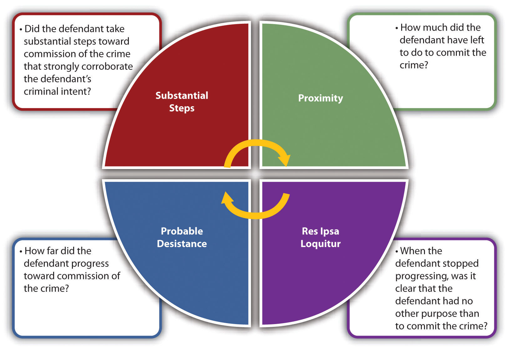
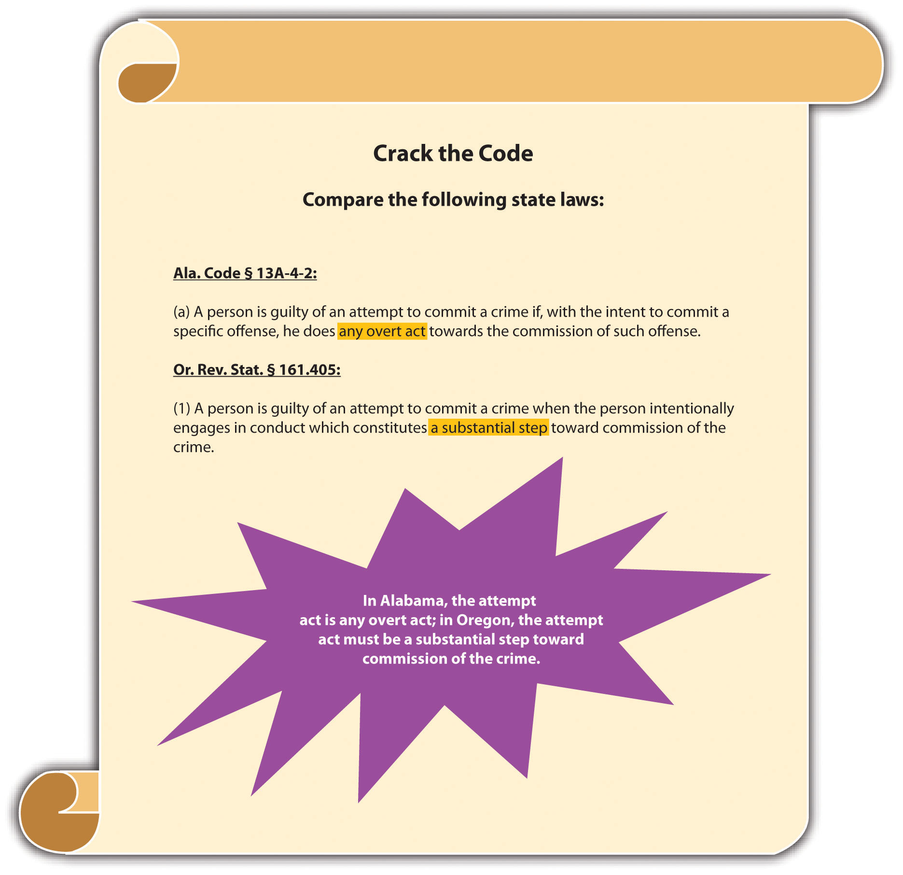
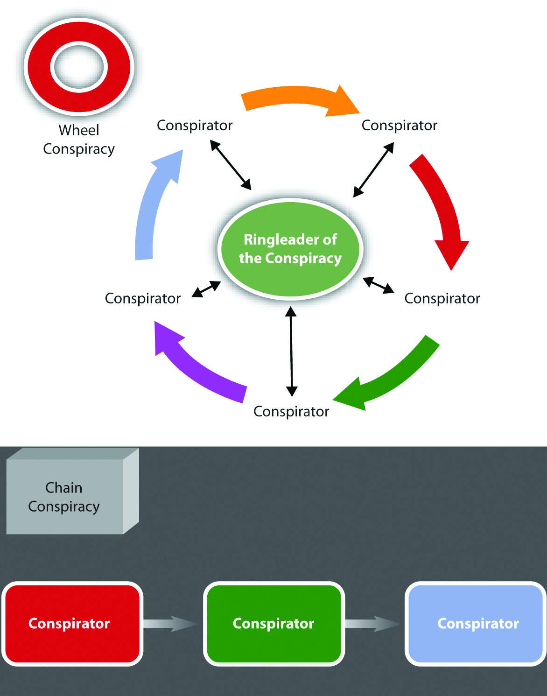
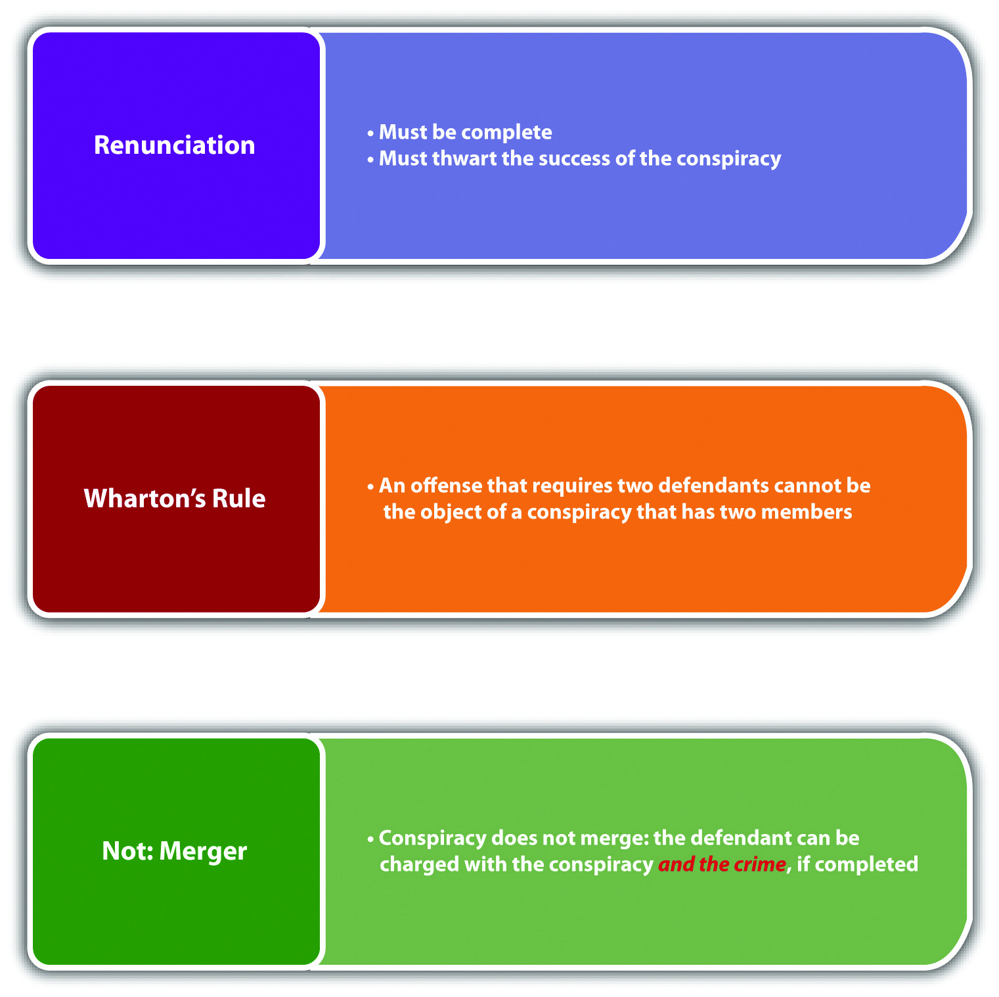
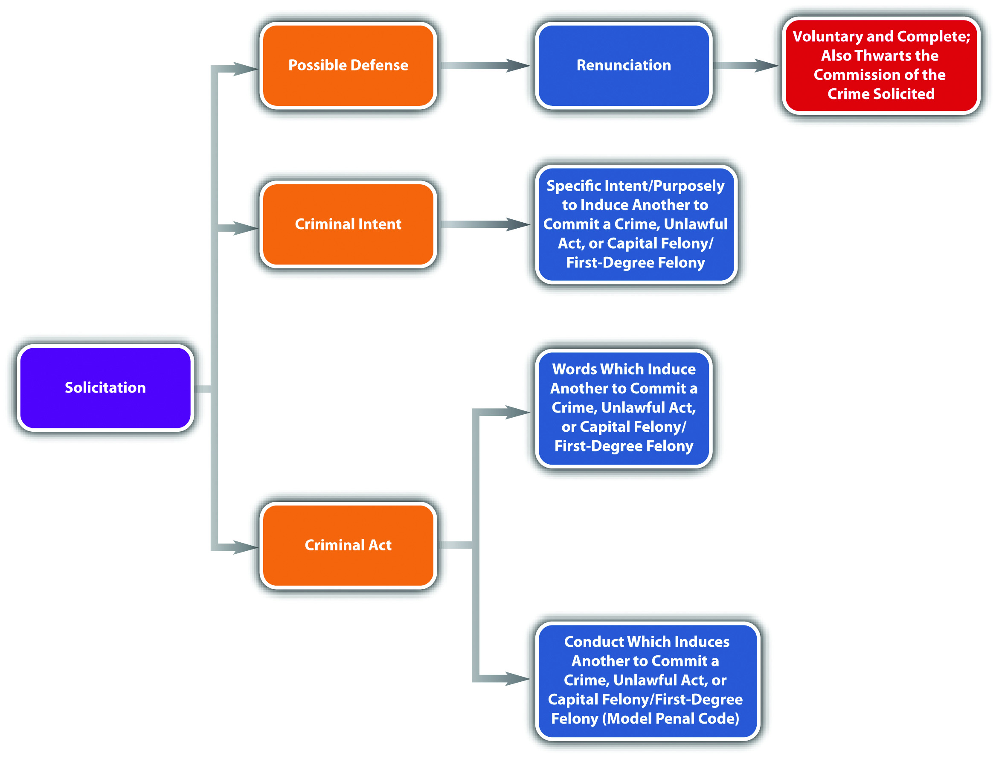

Source: Image courtesy of Jane F. Kardashian, MD.
And so long as the partnership in crime continues, the partners act for each other in carrying it forward.
Pinkerton v. U.S., cited in Section 8.2.4 "Consequences of Conspiracy"
AttemptAn inchoate crime that criminalizes ineffectually trying to commit a criminal offense., conspiracy, and solicitation are considered inchoate crimesA crime that may not be completed.. Inchoate means “just begun, incipient, in the early stages.”Yourdictionary.com, accessed December 28, 2010, “Definition of Inchoate,” http://www.yourdictionary.com/inchoate. Inchoate crimes can be left unfinished, or incomplete. Although attempt never results in the finished criminal offense, both conspiracy and solicitation could give rise to separate completed crimes.
The rationale supporting punishment for an inchoate crime is prevention and deterrence. If a defendant could not be apprehended until a crime is finished, law enforcement would not be able to intervene and avert injury to victim(s) or property. In addition, a defendant who is unable to complete a crime would try again and again, free from any criminal consequences.
The difficulty in holding a defendant accountable for an inchoate or incomplete crime is ascertaining the level of progress necessary to impute criminal responsibility, which is especially daunting with attempt, because in every instance the crime is left unfinished, as is discussed in Section 8.1 "Attempt".
At early English common law, attempt was not a crime.Stephen J. Schulhofer, Dan M. Kahan, “Attempt,” encyclopedia.com website, accessed December 26, 2010, http://www.encyclopedia.com/topic/Attempt.aspx. Gradually, the law evolved, and a defendant who committed attempt resulting in severe harm was punished for a minor crime, typically a misdemeanor. One of the first documented cases of attempt was Rex v. Scofield, Cald. 397 (1784).Stephen J. Schulhofer, Dan M. Kahan, “Attempt,” encyclopedia.com website, accessed December 26, 2010, http://www.encyclopedia.com/topic/Attempt.aspx. In Scofield, a servant was convicted of a misdemeanor for attempting to burn down his master’s house with a lighted candle. A subsequent case, Rex v. Higgins, 102 Eng. Rep. 269 (K.B. 1801), upheld an indictment for attempted theft and firmly established the crime of attempt in English jurisprudence. In modern times, most states criminalize attempt, the majority in statutes, except in some states that permit common-law crimes. However, even in statutes, the word “attempt” is often left undefined, forcing courts to derive the meaning from common-law principles.
In general, there are two types of attempt statutes. Some states have general attempt statutes that set forth attempt elements and apply them to any criminal offense.Tex. Penal Code § 15.01, accessed December 27, 2010, http://law.onecle.com/texas/penal/15.01.00.html. Other states and the federal government have specific attempt statutes that define attempt according to specified crimes, such as murder, robbery, or rape.18 U.S.C. § 1113, accessed June 28, 2011, http://www.law.cornell.edu/uscode/718/usc_sec_18_00001113----000-.html. Keep in mind that several states do not criminalize attempt in a statute and consider it a common-law crime.Grill v. State, 337 Md. 91 (1995), accessed December 27, 2010, http://www.leagle.com/xmlResult.aspx?xmldoc=1995428337Md91_1422.xml&docbase=CSLWAR2-1986-2006.
The criminal act element required for attempt varies, depending on the jurisdiction. As Chapter 4 "The Elements of a Crime" stated, thoughts are not criminal acts. Thus a defendant does not commit attempt by plotting or planning an offense. An extension of this rule dictates that mere preparation is not enough to constitute the attempt criminal act element.People v. Luna, 170 Cal. App. 4th 535 (2009), accessed December 27, 2010, http://scholar.google.com/scholar_case?case=11148942163253518924&hl=en&as_sdt=2&as_vis=1&oi=scholarr. However, the crux of any attempt case is how close to completing the offense the defendant must get to fulfill the attempt criminal act requirement. In many statutes and cases, the attempt act is loosely defined to allow the trier of fact the flexibility needed to separate true criminal attempt from noncriminal preparation.
Jurisdictions use four tests to ascertain whether the defendant has committed the attempt criminal act: proximity testA test for the criminal act element required for attempt that measures how close the defendant is to completing the offense., res ipsa loquitur testA test for the criminal act element required for attempt that determines whether the defendant’s actions indicate no other purpose than to commit the crime at issue. Also called the unequivocality test., probable desistance testA test for the criminal act element required for attempt that ascertains that the defendant would probably not desist from completing the offense if it were not for the interruption by law enforcement or other intervening circumstances., and the Model Penal Code’s substantial steps testThe Model Penal Code’s test for the criminal act element required for attempt. The defendant must take substantial steps toward completion of the offense that are corroborative of the defendant’s criminal intent..
The proximity test measures the defendant’s progress by examining how close the defendant is to completing the offense. The distance measured is the distance between preparation for the offense and successful termination. It is the amount left to be done, not what has already been done, that is analyzed.Commonwealth v. Hamel, 52 Mass. App. Ct. 250 (2001), accessed December 29, 2010, http://scholar.google.com/scholar_case?case=3222223363179578849&hl=en&as_sdt=2&as_vis=1&oi=scholarr. In some jurisdictions, if the defendant’s criminal intent is clear, the defendant does not need to come as close to completion of the offense.People v. Dillon, 668 P.2d 697 (1983), accessed December 29, 2010, http://scholar.google.com/scholar_case?case=16336126005486548570&hl=en&as_sdt=2,5. Generally, the defendant does not have to reach the last step before completion,People v. Dillon, 668 P.2d 697 (1983), accessed December 29, 2010, http://scholar.google.com/scholar_case?case=16336126005486548570&hl=en&as_sdt=2,5. although many defendants do.
Melissa and Matthew decide they want to poison their neighbor’s dog because it barks loudly and consistently every night. Melissa buys some rat poison at the local hardware store. Matthew coats a raw filet mignon with the poison and throws it over the fence into the neighbor’s yard. Fortuitously, the neighbors are on an overnight camping trip, and the dog is with them. The next day, after a night of silence, Melissa feels regret and climbs over the fence to see what happened to the dog. When she sees the filet untouched on the ground, she picks it up and takes it back over the fence, later disposing of it in the trash. If Melissa and Matthew are in a jurisdiction that follows the proximity test, Melissa and Matthew have probably committed the criminal act element required for attempt. Melissa and Matthew finished every act necessary to commit the crime of destruction of property or animal cruelty (poisoning the dog). The only reason the crime was not successfully consummated was the absence of the dog, which is a circumstance outside their control. Thus Melissa and Matthew could most likely be charged with and convicted of this offense. If Melissa bought the rat poison but thereafter changed her mind and talked Matthew out of poisoning the dog, her actions would be a preparation, not a positive step toward commission of the crime. If Matthew coated the filet with poison but then changed his mind and threw the filet away, he would still be “too far” away from completing the offense. However, once the filet is thrown over the fence, the crime is proximate to completion; the only step left is the victim’s (dog’s) participation.
Res ipsa loquitur means “the thing speaks for itself.”USLegal.com, “Definition of Res Ipsa Loquitur,” accessed December 29, 2010, http://definitions.uslegal.com/r/res-ipsa-loquitur. The res ipsa loquitur test, also called the unequivocality test, analyzes the facts of each case independently. Under res ipsa loquitur or unequivocality, the trier of fact must determine that at the moment the defendant stopped progressing toward completion of the offense, it was clear that the defendant had no other purpose than commission of the specific crime at issue. This determination is based on the defendant’s act—which manifests the intent to commit the crime.Hamiel v. Wisconsin, 285 N.W.2d 639 (1979), accessed December 30, 2010, http://scholar.google.com/scholar_case?case=3730801887783687670&hl=en&as_sdt=2002&as_vis=1.
Harry wants to kill his wife Ethel for the proceeds of her life insurance policy. Harry contacts his friend Joe, who is reputed to be a “hit man,” and sets up a meeting for the next day. Harry meets with Joe and asks him if he will murder Ethel for one thousand dollars. Joe agrees, and Harry pulls out a wad of cash and pays him. Unfortunately for Harry, Joe is a law enforcement decoy. If the state in which Harry paid Joe recognizes the res ipsa loquitur or unequivocality test, Harry has most likely committed attempted murder (along with solicitation to commit murder, which is discussed shortly). Harry’s actions in contacting and thereafter hiring and paying Joe to kill Ethel indicate that he has no other purpose than the commission of Ethel’s murder. Hiring and paying a hit man is more than just preparation. Note that evidence of Ethel’s life insurance policy is not needed to prove the attempt act. Harry’s conduct “speaks for itself,” which is the essence of res ipsa loquitur or unequivocality.
The probable desistance test examines how far the defendant has progressed toward commission of the crime, rather than analyzing how much the defendant has left to accomplish. Pursuant to this test, a defendant commits attempt when he or she has crossed a line beyond which it is probable he or she will not desist unless there is an interruption from some outside source, law enforcement, or circumstances beyond his or her control.See discussion in U.S. v. Mandujano, 499 F.2d 370, 373 fn. 5 (1974), accessed December 30, 2010, http://ftp.resource.org/courts.gov/c/F2/499/499.F2d.370.74-1445.html.
Judy, who works at Zales jewelry store, tells her Facebook friends that she is going to steal a diamond necklace out of the safe that evening. Judy drives to Zales at eleven o’clock after the store has closed. She enters the building using her key and quickly disables the store alarm. She then turns off the store security camera. As she crouches down by the safe and begins to enter the combination, all the lights go on and she blinks, startled by the sight of several police officers pointing their guns at her. If the state in which Judy lives follows the probable desistance test, Judy has most likely committed attempted larceny, along with burglary. Judy informed others of her plan, drove to the crime scene, entered the building unlawfully, disabled the store alarm, and turned off the store security camera. This series of actions indicate that Judy crossed a point of no return. It is unlikely that Judy would have desisted without the law enforcement interruption, which fulfills the attempt act requirement pursuant to the probable desistance test.
The Model Penal Code developed the substantial steps test in response to the large variance between different jurisdictions in evaluating the criminal act element required for attempt. The substantial steps test is intended to clarify and simplify the attempt act analysis, to prevent arbitrary application. It is also a test that is more likely to result in a conviction because it classifies as “substantial” those acts the other tests might consider only “preparatory.”People v. Dillon, 668 P.2d 697, 720, fn.1 (1983), accessed December 30, 2010, http://scholar.google.com/scholar_case?case=16336126005486548570&hl=en&as_sdt=2002&as_vis=1.
The substantial steps test has two parts. First, the defendant must take substantial steps toward completion of the crime. As the Model Penal Code states, “[a] person is guilty of an attempt to commit a crime if…he…does…anything which…is an act or omission constituting a substantial step in a course of conduct planned to culminate in his commission of the crime” (Model Penal Code § 5.01(1)(c)). Second, the defendant’s actions must be “strongly corroborative of the actor’s criminal purpose” (Model Penal Code § 5.01(2)). To further elucidate the test, the Model Penal Code provides seven examples of actions that constitute substantial steps, as long as they are corroborative of the defendant’s intent. The seven examples are lying in wait; enticing the victim to go to the scene of the crime; investigating the potential scene of the crime; unlawfully entering a structure or vehicle where the crime is to be committed; possessing materials that are specially designed for unlawful use; possessing, collecting, or fabricating materials to be used in the crime’s commission; and soliciting an innocent agent to commit the crime (Model Penal Code § 5.01(2)).
Kevin wants to rob an armored car that delivers cash to the local bank. After casing the bank for two months and determining the date and time that the car makes its delivery, Kevin devises a plan that he types on his computer. On the date of the next delivery, Kevin hides a weapon in his jacket pocket and makes his way on foot to the bank. Thereafter, he hides in an alley and waits for the truck to arrive. When the truck drives up and parks in front of the bank, Kevin walks over to the driver’s door and reaches for his weapon. He is immediately apprehended by a security guard who saw him emerge from the alley. If Kevin is in a substantial steps jurisdiction, he has probably committed the criminal act element required for attempt. Kevin cased the bank, planned the robbery, showed up on the appointed date and time with a concealed weapon, and hid in an alley to wait for the truck to appear. These actions are (1) investigating the potential scene of the crime, (2) possessing materials to be used in the crime’s commission, and (3) lying in wait. Thus Kevin has completed three substantial steps that corroborate his intent as expressed in the plan he typed, which is most likely sufficient to constitute the attempt criminal act element under the Model Penal Code.
Figure 8.1 Various Tests for Attempt Act
Figure 8.2 Crack the Code
Some states have statutes criminalizing behavior that would be considered preparatory under any of the four attempt act tests. For example, some statutes prohibit the mere possession of burglar’s toolsN.Y. Penal Law § 140.35, accessed December 31, 2010, http://law.onecle.com/new-york/penal/PEN0140.35_140.35.html. or even the manufacture of burglar’s tools.Conn. Gen. Stat. § 53a-106, accessed December 31, 2010, http://www.cga.ct.gov/2009/pub/chap952.htm#Sec53a-106.htm. A defendant could be convicted of a preparatory crime and attempt if the criminal act element for both is present under the circumstances.
Hal manufactures a lock pick and takes it to the local coin shop, which is closed. Hal takes the lock pick out and begins to insert it into the coin shop doorknob. A security guard apprehends Hal before he is able to pick the lock. If Hal is in a jurisdiction that prohibits the manufacture of burglar’s tools, he probably could be charged with and convicted of manufacture of burglar’s tools and attempted burglary because he has committed the criminal act element required for both of these offenses.
The criminal intent element required for attempt in the majority of jurisdictions is the specific intent or purposely to commit the crime at issue.N. Y. Penal Law § 110.00, accessed December 31, 2010, http://law.onecle.com/new-york/penal/PEN0110.00_110.00.html. Generally, no such thing exists as reckless or negligent attempt. Thus if the prosecution fails to prove beyond a reasonable doubt that the defendant acted purposefully with intent to commit the crime attempted, this could operate as a failure of proof defense.
Eric is hiking in a jurisdiction that criminalizes reckless burning. Eric pauses in front of a sign that states “Fire Danger Today: High.” Eric reads the sign, pulls out a cigarette, lights it, and throws the lit match into some dry brush near the sign. He starts hiking and when he finishes his cigarette, he tosses the lit cigarette butt into some arid grass. Neither the brush nor the grass burns. Eric probably does not have the requisite criminal intent for attempted reckless burning. Attempt requires purposeful conduct. Eric’s conduct is reckless because he is aware of a risk and disregards it. If Eric takes the match or lit cigarette and tries to ignite a fire with them, it is likely that he has the appropriate criminal intent for attempted arson. However, in this case Eric’s actions demonstrate careless behavior that probably is not sufficient for the crime of attempt.
Along with failure of proof defenses to the criminal act and criminal intent elements, legal impossibilityA defense to attempt if the defendant is attempting to commit a legal act that he or she believes is illegal. and voluntary abandonmentA defense to attempt if the defendant voluntarily and completely withdraws from commission of the offense before it is consummated. can also function as affirmative defenses to attempt in many jurisdictions.
Two types of impossibility defenses exist: legal impossibility, which can function as a defense to attempt, and factual impossibilityThe defendant cannot complete the offense because the facts are not as he or she believes them to be. Generally not a defense to attempt., which generally cannot. Legal impossibility means that the defendant believes what he or she is attempting to do is illegal, when it is not. Factual impossibility means that the defendant could not complete the crime attempted because the facts are not as he or she believes them to be. The Model Penal Code disallows factual impossibility as a defense by stating that conduct is an attempt when the defendant “purposely engages in conduct which would constitute the crime if the attendant circumstances were as he believes them to be” (Model Penal Code § 5.01(1) (a)).
Review the example given in Section 8 "Res Ipsa Loquitur Test" with Melissa and Matthew and the attempted poisoning of the neighbor’s dog. Assume that Melissa is eighteen. Melissa believes that an individual must be twenty-one to purchase rat poison because that is the law in the state where she lived five years ago. Actually, the state in which Melissa currently resides allows the purchase of rat poison by those who are eighteen or older. The first store Melissa enters asks for identification when she tries to pay for the rat poison, so Melissa makes an excuse and leaves. The second store Melissa enters does not ask for identification, and she successfully makes the rat poison purchase. Melissa has probably not attempted to purchase rat poison illegally in the first store she entered. Melissa’s act in attempting to purchase the rat poison is legal under the circumstances. Thus her mistaken belief that she is attempting to commit a crime does not transform this legal act into an illegal one.
Recall from the example given in Section 8 "Res Ipsa Loquitur Test" that Matthew threw a filet coated with rat poison over the fence into the neighbor’s yard with the intent to poison the neighbor’s dog. Both Melissa and Matthew are under the mistaken belief that the dog is present and will eat the filet. However, the dog is on an overnight camping trip with its owners. This mistake of fact probably will not excuse Melissa and Matthew’s attempt. Melissa and Matthew purposely engaged in conduct that would result in the poisoning of the dog if the facts were as Melissa and Matthew believed them to be. Thus Melissa and Matthew have most likely committed attempted destruction of property or animal cruelty regardless of the fact that their plan could not succeed under the circumstances.
Many jurisdictions allow a defendant who voluntarily abandons the planned offense to use this abandonment as an affirmative defense to attempt.Fla. Stat. Ann. § 777.04(5) (a), accessed December 31, 2010, http://law.justia.com/florida/codes/2003/TitleXLVI/chapter777/777_04.html. The defense has two parts. First, the defendant must have a change of heart that is not motivated by an increased possibility of detection, or a change in circumstances that make the crime’s commission more difficult. As the Model Penal Code states, “it is an affirmative defense that he abandoned his effort to commit the crime…under circumstances manifesting a complete and voluntary renunciation of his criminal purpose…[R]enunciation of criminal purpose is not voluntary if it is motivated…by circumstances…which increase the probability of detection…or which make more difficult the accomplishment of the criminal purpose” (Model Penal Code § 5.01(4)). Second, the abandonment must be complete and cannot simply be a postponement. Under the Model Penal Code, “[r]enunciation is not complete if it is motivated by a decision to postpone the criminal conduct until a more advantageous time or to transfer the criminal effort to another but similar…victim” (Model Penal Code § 5.01(4)). The voluntary abandonment defense gives defendants incentive to stop progressing toward consummation of the offense and prevents the crime from occurring without the need for law enforcement intervention.
Review the example with Melissa and Matthew in Section 8 "Res Ipsa Loquitur Test". If Melissa changes her mind after purchasing the rat poison and talks Matthew out of poisoning the neighbor’s dog, Melissa has voluntarily abandoned the crime and cannot be charged with attempt. If Matthew changes his mind after coating the filet with rat poison and throws the filet away, Matthew has voluntarily abandoned the crime and cannot be charged with attempt. Note that both Melissa’s and Matthew’s actions are in the very early stages of the crime of destruction of property or animal cruelty and probably will be considered preparatory, rather than constituting the criminal act element required for attempt. When Melissa climbs over the fence, picks up the filet, and takes it back to her house for disposal, it is most likely too late to voluntarily abandon the crime. At this point, the crime of attempt has already been committed, and neither voluntary abandonment nor factual impossibility can function as defenses.
Attempt mergesWhen one offense combines with another. Attempt merges into the completed offense in many jurisdictions. into the crime if the crime is completed in many jurisdictions, which means that the defendant cannot be charged with attempt and the completed crime.Ga. Code tit. 16 § 16-4-2, accessed January 28, 2011, http://law.onecle.com/georgia/16/16-4-2.html.
Review the example with Melissa and Matthew in Section 8 "Res Ipsa Loquitur Test". Change the facts, and assume that the neighbor’s dog eats the poisoned filet and dies. Melissa and Matthew probably cannot be charged with attempted destruction of property or animal cruelty and destruction of property or animal cruelty in many jurisdictions. Once the crime is complete, the attempt crime merges into the consummated offense, and Melissa and Matthew may be charged only with destruction of property or animal cruelty.
Figure 8.3 Defenses to Attempt

Recall from Chapter 4 "The Elements of a Crime" that a defendant’s criminal intent can transfer from the intended victim to the actual victim in some jurisdictions. If the intent is transferred, the defendant may be criminally responsible for the consummated offense against the eventual victim and for attempt against the intended victim.
Review the example with Melissa and Matthew in Section 8 "Res Ipsa Loquitur Test". Change the facts, and assume that the neighbor’s cat licks the poison off the filet and thereafter dies. If Melissa and Matthew are in a jurisdiction that recognizes transferred intent, they may be charged with attempted destruction of property or animal cruelty for trying to poison the neighbor’s dog and destruction of property or animal cruelty for actually poisoning and killing the neighbor’s cat.
Jurisdictions vary as to how they grade attempt. Some jurisdictions follow the common law and grade attempt lower than the completed offense.Mo. Ann. Stat. § 564.011, accessed December 31, 2010, http://law.justia.com/missouri/codes/2005/t38/5640000011.html. Other jurisdictions punish attempt the same as the attempted offense, with exceptions for certain specified crimes.Conn. Gen. Stat. § 53-a-51, accessed December 31, 2010, http://www.cga.ct.gov/2001/pub/Chap952.htm#sec53a-51.htm.
Figure 8.4 Diagram of Attempt

Answer the following questions. Check your answers using the answer key at the end of the chapter.
ConspiracyA criminal agreement to commit a crime, felony, or false indictment or to maintain a false lawsuit. punishes defendants for agreeing to commit a criminal offense. Conspiracy is an inchoate crime because it is possible that the defendants never will commit the planned offense. However, a conspiracy is complete as soon as the defendants become complicit and commit the conspiracy act with the conspiracy intent. The rationale for punishing defendants for planning activity, which generally is not sufficient to constitute the crime of attempt, is the increased likelihood of success when defendants work together to plot and carry out a criminal offense.Dennis v. U.S., 341 U.S. 494 (1951), accessed January 3, 2011, http://scholar.google.com/scholar_case?case=13576454585730441281&hl=en&as_sdt=2&as_vis=1&oi=scholarr. If the defendants commit the crime that is the object of the conspiracy, the defendants are responsible for the conspiracy and the completed crime, as is discussed in Section 8.2.4 "Consequences of Conspiracy".
In many jurisdictions, the criminal act element required for conspiracy is an agreement to commit any criminal offense.Fla. Stat. Ann. § 777.04(3), accessed January 1, 2011, http://www.leg.state.fl.us/statutes/index.cfm?App_mode=Display_Statute&Search_String=&URL=0700-0799/0777/Sections/0777.04.html. The agreement does not need to be formal or in writing.State v. Bond, 49 Conn. App. 183 (1998), accessed January 1, 2011, http://caselaw.findlaw.com/ct-court-of-appeals/1255702.html. Some states also criminalize as conspiracy the agreement to falsely indict another for a crime and the agreement to falsely maintain any lawsuit, even a civil lawsuit.Cal. Penal Code § 182(a) (2), (3), accessed January 2, 2011, http://law.justia.com/california/codes/2009/pen/182-185.html. Other states only criminalize as conspiracy the agreement to commit a felony.Tex. Penal Code § 15.02, accessed January 3, 2011, http://law.onecle.com/texas/penal/15.02.00.html.
In some states and federally, an overt act in furtherance of the conspiracy is also required.18 U.S.C. § 371, accessed January 1, 2011, http://codes.lp.findlaw.com/uscode/18/I/19/371. The Model Penal Code requires an overt act only when the planned crime is “other than a felony of the first or second degree” (Model Penal Code § 5.03(5)). The overt act does not have to be criminal and may be planning or preparatory activity that would be insufficient to constitute the criminal act element required for attempt.State v. Verive, 627 P.2d 721 (1981), accessed January 1, 2011, http://wings.buffalo.edu/law/bclc/web/azverive.htm.
Review the example with Melissa and Matthew in Section 8 "Res Ipsa Loquitur Test". In this example, Melissa and Matthew agree to poison the neighbor’s dog because it barks every night. After deciding they will poison the dog, Melissa buys rat poison, and Matthew thereafter coats a filet mignon with it and throws it over the fence into the neighbor’s yard. In a jurisdiction that defines the criminal act element for conspiracy as an agreement between two or more to commit a criminal offense, Melissa and Matthew probably committed the conspiracy criminal act as soon as they agreed to poison the dog. Their agreement could be verbal and does not need to be formal or in writing. If Melissa and Matthew are in a jurisdiction that requires an overt act in furtherance of the conspiracy, Melissa and Matthew probably have not committed the conspiracy criminal act until Melissa buys the rat poison. Note that the purchase of the rat poison is not sufficient to constitute the criminal act element required for attempted destruction of property or animal cruelty, as discussed in Section 8 "Res Ipsa Loquitur Test". However, it would likely be enough to support the conspiracy to commit destruction of property or animal cruelty.
The essence of conspiracy is agreement, which requires two or more parties. However, the modern approach is that a conspiracy may be formed as long as one of the parties has the appropriate intent.Ind. Code § 35-41-5-2(5), accessed January 1, 2011, http://www.in.gov/legislative/ic/2010/title35/ar41/ch5.html. Pursuant to this unilateral view of conspiracy, a conspiracy may exist between a defendant and a law enforcement decoy who is pretending to agree.
In the majority of jurisdictions, the criminal intent element required for conspiracy is specific intent or purposely to agree with another to commit the crime at issue.Connecticut Criminal Jury Instructions 3.3-1, accessed January 1, 2011, http://www.jud.ct.gov/ji/criminal/part3/3.3-1.htm. As the Model Penal Code states, “[a] person is guilty of conspiracy…if with the purpose of promoting or facilitating its commission he: (a) agrees with such other person…that they…will engage in conduct which constitutes such crime” (Model Penal Code § 5.03(1) (a)). This intent has two components. The prosecution must prove that the conspirator intended to agree and also intended to commit the underlying offense.State v. Lewis, 220 Conn. 602 (1991), accessed January 2, 2011, http://scholar.google.com/scholar_case?case=6997065715061309373&hl=en&as_sdt=2&as_vis=1&oi=scholarr.
Shelley and Sam meet at a bar and discuss their lack of finances. Shelley mentions that she and her friend Steffy work at a convenience store. Sam asks Shelley if she would like to help him rob the convenience store when Steffy is working. Shelley agrees. The two plan the robbery. Shelley and Sam agree that Shelley will drive the getaway car on the appointed date and time. Shelley informs Sam that Steffy is extremely meek and fearful and will readily hand over cash out of the cash register if Sam uses a fake handgun. Shelley and Sam probably have the criminal intent element required for conspiracy. Shelley and Sam have the intent to agree to work together because they both need each other to successfully complete the convenience store robbery. In addition, Shelley and Sam have the intent to successfully commit the robbery because they both want the money the robbery will produce. Thus if no overt act is required in their jurisdiction, Shelley and Sam most likely have completed the crime of conspiracy and may be prosecuted for this offense whether or not the robbery actually takes place.
Similar to accomplice liability, the acquittal of or failure to prosecute one party to the conspiracy does not relieve a coconspirator from criminal responsibility in many states.Tex. Penal Code § 15.02(c), accessed January 3, 2011, http://law.onecle.com/texas/penal/15.02.00.html. In addition, a coconspirator does not need to know every other coconspirator to be accountable as a member of the conspiracy.Neb. Rev. Stat. Ann. § 28-202(2), accessed January 3, 2011, http://law.justia.com/nebraska/codes/2006/s28index/s2802002000.html. As long as the conspiracy defendant is aware that other coconspirators exist, the mens rea for conspiracy is present. As the Model Penal Code states, “[i]f a person guilty of conspiracy…knows that a person with whom he conspires to commit a crime has conspired with another person or persons to commit the same crime, he is guilty of conspiring with such other person or persons, whether or not he knows their identity” (Model Penal Code § 5.03(2)). Large-scale conspiracies, such as conspiracies to distribute contraband or illegal firearms, may result in each member sharing criminal responsibility for the conspiracy and every separate conspiracy transaction.
A conspiracy that has more than one criminal objective still can be just one conspiracy. Under the Model Penal Code, “[i]f a person conspires to commit a number of crimes, he is guilty of only one conspiracy so long as such multiple crimes are the object of the same agreement or continuous conspiratorial relationship” (Model Penal Code § 5.03(3)).
It is useful to understand two basic large-scale conspiracy organizational formats: wheel and chain conspiracies. A wheel conspiracyA conspiracy where each member is connected to one central coconspirator. consists of a single conspirator, generally the ringleader who is interconnected to every other coconspirator. The ringleader is the hub; the other coconspirators are the spokes of the wheel. An example of a wheel conspiracy would be a mob boss linked to individual members of the mob following his or her commands. A chain conspiracyA conspiracy where each member is interconnected in a linear fashion. consists of coconspirators connected to each other like links in a chain but without a central interconnected ringleader. An example of a chain conspiracy is a conspiracy to manufacture and distribute a controlled substance, with the manufacturer linked to the transporter, who sells to a large-quantity dealer, who thereafter sells to a smaller-quantity dealer, who sells to a customer. Whether the conspiracy is wheel, chain, or otherwise, if the jurisdiction has a statute or common-law rule that each member does not need to personally know every other member as discussed previously, the coconspirators may be criminally responsible for the conspiracy and the crime(s) it furthers.
Figure 8.5 Comparison of Wheel and Chain Conspiracies
In some states and federally, individuals who enter into a conspiracy are criminally responsible for every reasonably foreseeable crime committed in furtherance of the conspiracy.U.S. v. Castaneda, 9 F.3d 761 (1993), accessed January 3, 2011, http://scholar.google.com/scholar_case?case=13576116398000833345&hl=en&as_sdt=2&as_vis=1&oi=scholarr. This rule is called the Pinkerton ruleA rule that allows a defendant to be convicted of conspiracy and every foreseeable crime committed in furtherance of the conspiracy., based on the US Supreme Court case that created it (Pinkerton v. U.S., 328 U.S. 640 (1946).). One factor used to determine foreseeability is the degree of the defendant’s involvement in the conspiracy. A defendant who plays a minor role is less likely to be criminally responsible than a defendant who has a more substantive involvement.U.S. v. Castaneda, 9 F.3d 761 (1993), accessed January 3, 2011, http://scholar.google.com/scholar_case?case=13576116398000833345&hl=en&as_sdt=2&as_vis=1&oi=scholarr.
Review the example in Section 8 "Example of Conspiracy Intent" with Shelley and Sam. Assume that on the night of the convenience store robbery, Lucy, an armed, off-duty police officer, wanders into the store to purchase cigarettes at the moment Sam pulls out his fake handgun. Lucy yanks her concealed handgun out of her waistband and tells Sam to drop the weapon. Jolene, another customer in the store, observes the two pointing guns at each other and suffers a fatal heart attack. In many jurisdictions, both Shelley and Sam probably could be criminally responsible for conspiracy to commit robbery, attempted robbery, and the murder of Jolene. Shelley and Sam attempted to commit the robbery in furtherance of the conspiracy. Both played a major role in the conspiracy and the attempted robbery. Thus both are accountable for the foreseeable consequences. Robbery is a crime of violence, so a death that occurs during a robbery is foreseeable, even though Sam is armed with only a pretend handgun. Thus Shelley and Sam may be charged with and convicted of Jolene’s murder, which is most likely felony murder. Felony murder is discussed in detail in Chapter 9 "Criminal Homicide".
A criminal offense that requires two parties cannot be the object of a conspiracy that consists of two parties. This rule is called Wharton’s ruleA rule that creates a judicial presumption prohibiting a conviction for conspiracy and the crime it furthers if the conspiracy has only two members and the crime it furthers requires two members. Also called the concert of action rule., or the concert of action rule.USLegal, “Definition of Wharton’s Rule,” USLegal.com website, accessed January 3, 2011, http://definitions.uslegal.com/w/whartons-rule. However, a statute can expressly criminalize a conspiracy to commit any crime, abrogating the rule. Currently, Wharton’s rule can operate as a judicial presumption, to be applied in the absence of legislative intent to the contrary.Ianelli v. U.S., 420 U.S. 770, 785 (1975), accessed January 3, 2011, http://scholar.google.com/scholar_case?case=16942118715212641737&hl=en&as_sdt=2&as_vis=1&oi=scholarr.
Joanne and Robert conspire with Don, Joanne’s pimp, to engage in prostitution. Joanne and Robert get caught in the act of engaging in prostitution by Edward, a police officer. Wharton’s rule probably does not apply in this case. Although engaging in prostitution requires two parties, the conspiracy to engage in prostitution has three members—Don, Joanne, and Robert. Thus Wharton’s rule is likely inapplicable, and Don, Joanne, and Robert might have committed conspiracy to engage in prostitution. Note that if only Joanne and Robert conspire to engage in prostitution, Wharton’s rule may act as a judicial presumption that they cannot commit conspiracy and the crime it furthers.
One potential affirmative defense to conspiracy is renunciationAn affirmative defense to conspiracy in some jurisdictions if the defendant voluntarily and completely renounces the conspiracy and thwarts the crime that is its object.. Similar to voluntary abandonment in attempt, renunciation can operate as a defense to conspiracy in some jurisdictions if the defendant completely and voluntarily renounces the conspiracy.N.J. Stat. § 2c: 5-2e, accessed January 4, 2011, http://law.onecle.com/new-jersey/2c-the-new-jersey-code-of-criminal-justice/5-2.html. The renunciation must also thwart the crime that is the object of the conspiracy. The Model Penal Code allows the defense and provides, “It is an affirmative defense that the actor, after conspiring to commit a crime, thwarted the success of the conspiracy, under circumstances manifesting a complete and voluntary renunciation of his criminal purpose” (Model Penal Code § 5.03(6)).
Review the example with Shelley and Sam in Section 8 "Example of Conspiracy Intent". In this example, Shelley and Sam agree to commit a robbery at the convenience store where Steffy is a cashier. Adjust the example so that Shelley has a change of heart and contacts law enforcement about the robbery before she drives Sam to the convenience store in the getaway car. Law enforcement officers ask Shelley to help them apprehend Sam, and she agrees. Shelley drives Sam to the convenience store as planned. Two law enforcement officers dress in plainclothes and pretend to be shopping in the convenience store when Sam arrives. As soon as Sam pulls out his fake handgun, they arrest him. If Shelley is in a jurisdiction that recognizes the renunciation defense, she probably will have a valid defense to a charge of conspiracy. Although Shelley committed the criminal act for conspiracy with the requisite criminal intent, she voluntarily and completely renounced the conspiracy and thwarted the crime that was its object. Thus Shelly has likely met the requirements of renunciation, and only Sam may be charged with a crime or crimes in this scenario.
At early common law, conspiracy, which was a misdemeanor, merged into the completed felony that was its object. The merger was based on the significant procedural differences between misdemeanor and felony trials. As the differences diminished, so did the merger concept. In modern times, conspiracy does not merge into the completed offense.Callanan v. U.S., 364 U.S. 587 (1961), accessed January 4, 2011, http://scholar.google.com/scholar_case?case=10261023883092961366&hl=en&as_sdt=2&as_vis=1&oi=scholarr. Thus a defendant can be charged with and convicted of conspiracy and any crime the conspiracy furthers, as is discussed more fully in Section 8.2.4 "Consequences of Conspiracy".
Figure 8.6 Defenses to Conspiracy
Some states grade conspiracy the same as the most serious offense that is the conspiracy’s object.18 Pa. Cons. Stat. § 905, accessed January 4, 2011, http://law.onecle.com/pennsylvania/crimes-and-offenses/00.009.005.000.html. Others grade conspiracy lower than the most serious conspired offense and do not criminalize the conspiracy to commit a simple, low-level misdemeanor.Tenn. Code Ann. §39-12-107(c), accessed January 4, 2011, http://law.justia.com/tennessee/codes/2010/title-39/chapter-12/part-1/39-12-107. Another view is to set a separate penalty for the conspiracy to commit specific crimes.Cal. Penal Code § 182, accessed January 4, 2011, http://law.onecle.com/california/penal/182.html. It is not unconstitutional to punish conspiracy more severely than the crime conspired.Clune v. U.S., 159 U.S. 590 (1895), accessed January 4, 2011, http://scholar.google.com/scholar_case?case=14126191414675975192&q= Clune+v.+US&hl=en&as_sdt=2002&as_vis=1.
In response to an increase in organized crime, the federal government enacted the Racketeer Influenced and Corrupt Organization Act (RICO)A federal statute that criminalizes organized crime. (18 U.S.C. §§ 1961-1968)). RICO provides extensive criminal penalties and also a civil cause of action for organized crime and includes all offenses that are criminal under state or federal law. Although RICO was originally intended to focus on sophisticated criminal businesses such as loan sharking, mafia, and high-stakes gambling operations,G. Robert Blakey, “RICO: The Genesis of an Idea,” Abstract, Social Science Research Network website, accessed January 4, 2011, http://papers.ssrn.com/sol3/papers.cfm?abstract_id=1142930. its modern application is much broader and encompasses many white-collar crimes and small-time conspiracies. A criminal organization always involves more than one member, and at the very least rudimentary planning, so conspiracy is a common RICO charge and is often easier to prove than a completed criminal offense. Recently, RICO has been criticized as being overused and applied in a manner inconsistent with its original purpose, especially when it targets smaller, low-member criminal “organizations.” Some examples of highly publicized RICO defendants are Hell’s Angels,Keith Zimmerman, Kent Zimmerman, “Hell’s Angel: The Life and Times of Sonny Barger and the Hell’s Angels Motorcycle Club,” accessed January 4, 2011, http://www.organized-crime.de/revbar01sonnybarger.htm. Catholic priests in sex abuse cases,Greg Smith, “Courts: Lawsuit Accuses Diocese of Hiding Sex Abuse,” Norwich Bulletin website, accessed January 4, 2011, http://www.norwichbulletin.com/lifestyles/spirituality/x497774422/Courts-Lawsuit-accuses-diocese-of-hiding-sex-abuse. and Major League Baseball.“Arbitration Ruling Effectively Ends Loria RICO Suit,” Sportsbusinessdaily.com website, accessed June 28, 2011, http://www.sportsbusinessdaily.com/Daily/Issues/2004/11/Issue-46/Franchises/Arbitration-Ruling-Effectively-Ends-Loria-Rico-Suit.aspx.
Table 8.1 Comparison of Conspiracy and Accomplice Liability
| Type of Liability | Criminal Act | Criminal Intent |
|---|---|---|
| Conspiracy | Agreement to commit a crime, false criminal indictment, false lawsuit, or felony; some jurisdictions require an overt act in furtherance of the conspiracy | Specific intent or purposely to agree to commit the specified offense(s) |
| Accomplice | Aid, assist commission of a crime | Specific intent or purposely or general intent or knowingly, depending on the jurisdiction |
Figure 8.7 Diagram of Conspiracy

Judge Sentences Tom DeLay to Three Years in Prison
Tom DeLay, former US House Majority Leader, was convicted of conspiracy and money laundering.Paul Meyer, “Tom DeLay is sentenced to three years,” Los Angeles Times website, accessed August 15, 2011, http://articles.latimes.com/2011/jan/11/nation/la-na-tom-delay-20110111. His verdict is shown in this video:
Answer the following questions. Check your answers using the answer key at the end of the chapter.
Did the Coconspirators Intend to Commit Murder?
Read People v. Han, 78 Cal. App. 4th 797 (2000). The case is available at this link: http://caselaw.lp.findlaw.com/data2/californiastatecases/g023433.pdf.
In Han, a lurid California case involving twins, three defendants were convicted of burglary, false imprisonment, and conspiracy to commit murder.Beloit Daily News, “‘Evil Twin’ Found Guilty of Plotting to Kill Sister,” Beloit Daily News website, accessed January 28, 2011, http://www.beloitdailynews.com/articles/1997/11/21/export7262.txt. Two of the codefendants appealed on the grounds that the evidence was insufficient to support the verdict of conspiracy to commit murder. The codefendants claimed that the only direct evidence of intent to commit murder were statements made by the defendant Jeen Han before the conspiracy was formed, and defendant Han could not conspire with herself.
The defendant Jeen Han and her twin sister Sunny had a long history of violence against each other.People v. Han, 78 Cal. App. 4th 797, 802 (2000), accessed January 28, 2011, http://caselaw.lp.findlaw.com/data2/californiastatecases/g023433.pdf. Defendant Han became enraged when Sunny pressed charges against her for theft. Testimonial evidence presented at trial showed that she expressed the intent to kill her twin before any conspiracy was formed.People v. Han, 78 Cal. App. 4th 797, 803 (2000), accessed January 28, 2011, http://caselaw.lp.findlaw.com/data2/californiastatecases/g023433.pdf. She actively sought out individuals to help her with her sister’s murder.People v. Han, 78 Cal. App. 4th 797, 803 (2000), accessed January 28, 2011, http://caselaw.lp.findlaw.com/data2/californiastatecases/g023433.pdf. Thereafter, she met up with her teenaged cousin and a friend, the other two codefendants. The three broke into Sunny Han’s apartment, tied up Sunny and her roommate at gunpoint and placed them in the bathtub, and then ransacked Sunny’s purse. Receipts produced at trial indicated a purchase of garbage bags, twine, utility tape, and Pine Sol previous to the incident. The Court of Appeal of California held that although circumstantial, the evidence supported the verdict. The court reasoned that the purchase of the twine, garbage bags, utility tape, and Pine Sol, combined with the actions of the defendants in breaking into the apartment, tying up the two roommates at gunpoint, and putting them in the bathtub, could be interpreted as circumstantial evidence of intent to kill, and the trier of fact did not err in making that conclusion.People v. Han, 78 Cal. App. 4th 797, 804, 805 (2000), accessed January 28, 2011, http://caselaw.lp.findlaw.com/data2/californiastatecases/g023433.pdf.
Check your answer using the answer key at the end of the chapter.
SolicitationRequesting another to commit any crime, capital felony, or first-degree felony. can be a precursor to conspiracy because it criminalizes the instigation of an agreement to commit a criminal offense. Solicitation is an inchoate crime because it is possible that the conspiracy will never be formed, and the crime that is its object will not be committed. Many of the rules that apply to attempt and conspiracy also apply to solicitation, as is discussed in Section 8.3 "Solicitation".
The criminal act element required for solicitation is generally words that induce another to commit a capital felony, first-degree felony,Tex. Penal Code § 15.03, accessed January 6, 2011, http://law.onecle.com/texas/penal/15.03.00.html (accessed January 6, 2011). or any crime.N. Y. Penal Law § 100.00, accessed January 6, 2011, http://law.onecle.com/new-york/penal/PEN0100.00_100.00.html. Typical words of inducement are request, command, encourage, hire, procure, entice, and advise. The Model Penal Code defines solicitation as follows: “[a] person is guilty of solicitation to commit a crime if with the purpose of promoting or facilitating its commission he commands, encourages or requests another person to engage in specific conduct which would constitute such crime” (Model Penal Code § 5.02(1)). However, the Model Penal Code does not require direct communication, if “conduct was designed to effect such communication.” (Model Penal Code § 5.02(2)).
Jimmy calls his friend Choo, who is reputed to be a “fence,” and asks Choo to help him sell some stolen designer shoes. If Jimmy is in a jurisdiction that criminalizes the “request” to commit any crime, Jimmy probably has committed the criminal act element required for solicitation. If Jimmy is in a jurisdiction that only criminalizes solicitation to commit a capital felony or first-degree felony, then Jimmy probably has not committed the criminal act element required for solicitation because selling stolen property is not generally graded that severely. If Jimmy is in a jurisdiction that follows the Model Penal Code, and Jimmy and Choo had a long-standing arrangement whereby Jimmy puts stolen items in a storage facility so that Choo can sell them, Jimmy will not have to communicate his request to Choo. He simply will have to place the shoes in the storage facility to commit the criminal act element required for solicitation.
The criminal intent element required for solicitation is specific intent or purposely to promote the crime’s commission in most jurisdictions and under the Model Penal Code, as set forth in Section 8.3.1 "Solicitation Act".Or. Rev. Stat. § 161.435, accessed January 6, 2011, http://law.onecle.com/oregon/161-general-provisions/161.435.html.
Review the solicitation act example in Section 8 "Example of Solicitation Act". In this example, Jimmy desires Choo to commit the crime of selling stolen property so that he can reap a benefit from his stolen designer shoes. Thus Jimmy probably has the criminal intent required for solicitation. If Jimmy is in a jurisdiction that criminalizes solicitation to commit any crime, Jimmy could be charged with and convicted of this offense.
Similar to conspiracy, many jurisdictions allow renunciation as an affirmative defense to solicitation.Ariz. Rev. Stat. § 13-1005, accessed January 7, 2011, http://www.azleg.gov/FormatDocument.asp?inDoc=/ars/13/01005.htm&Title=13&DocType=ARS. The renunciation must be voluntary and complete and must thwart the crime that is solicited. As the Model Penal Code states, “it is an affirmative defense that the actor, after soliciting another person to commit a crime, persuaded him not to do so or otherwise prevented the commission of the crime, under circumstances manifesting a complete and voluntary renunciation of his criminal purpose” (Model Penal Code § 5.02(3)).
Jurisdictions vary as to how they grade solicitation. Some jurisdictions grade solicitation according to the crime solicited, with more serious crimes accorded a more severe solicitation punishment.Ala. Code § 13A-4-1(f), accessed January 7, 2011, http://law.onecle.com/alabama/criminal-code/13A-4-1.html. Others grade solicitation the same as the crime solicited, with exceptions.N.H. Rev. Stat. Ann. § 629:2(IV), accessed January 7, 2011, http://law.justia.com/codes/new-hampshire/2009/TITLELXII/CHAPTER629/629-2.html. Some states grade solicitation as a misdemeanor, regardless of the crime solicited.Commonwealth v. Barsell, 424 Mass. 737 (1997), accessed January 7, 2011, http://scholar.google.com/scholar_case?case=8677391463974362410&hl=en&as_sdt=2&as_vis=1&oi=scholarr (accessed January 7, 2011).
Figure 8.8 Diagram of Solicitation
Answer the following questions. Check your answers using the answer key at the end of the chapter.
An inchoate crime might never be completed. The rationale of punishing a defendant for an inchoate crime is prevention and deterrence. The three inchoate crimes are attempt, conspiracy, and solicitation.
The criminal act element required for attempt must be more than thoughts or mere preparation. Modern jurisdictions use four tests to ascertain attempt. The proximity test analyzes how close the defendant is to completing the offense by examining how much is left to be done. The defendant may have to come dangerously close to completion but generally does not have to reach the last act before completion. The res ipsa loquitur test looks at the moment in time when the defendant stopped progressing toward completion to see if the defendant’s acts indicate that the defendant has no other purpose than commission of the offense. The probable desistance test focuses on how far the defendant has progressed to see if it is probable that the defendant won’t desist until the crime is complete. The Model Penal Code substantial steps test has two parts. First, the defendant must take substantial steps toward completion of the crime. Second, the defendant’s actions must strongly corroborate the defendant’s criminal purpose.
Some jurisdictions also criminalize preparatory crimes such as the manufacture or possession of burglar’s tools. Preparatory crimes can be combined with attempt under the appropriate circumstances.
The criminal intent element required for attempt is the specific intent or purposely to commit the crime attempted. Legal impossibility can be a defense to attempt if the defendant mistakenly believes that a legal act attempted is illegal. Factual impossibility is not a defense to attempt if the crime cannot be completed because the facts are not as the defendant believes them to be. Voluntary abandonment is also a defense to attempt in some jurisdictions if the defendant voluntarily and completely renounces the attempted crime.
If a jurisdiction recognizes transferred intent, a defendant can be criminally responsible for attempt against the intended victim and the completed offense against the actual victim. In many jurisdictions, attempt merges into the crime if the crime is completed. Jurisdictions vary as to how they grade attempt; either attempt is graded the same or lower than the completed offense.
The criminal act element required for conspiracy is an agreement to commit any crime, commit a felony, falsely indict another for a crime, or falsely maintain any lawsuit, depending on the jurisdiction. Some jurisdictions also require an overt act in furtherance of the conspiracy that could be a legal or preparatory act.
The criminal intent element required for conspiracy in many jurisdictions is the specific intent or purposely to agree and to commit the crime at issue. In some states, a coconspirator can be prosecuted even if another coconspirator is not prosecuted or acquitted. Coconspirators do not need to know every other coconspirator, as long as they are aware that other coconspirators exist. A wheel conspiracy connects all members to one central member. A chain conspiracy connects members to each other in a linear fashion.
The Pinkerton rule holds coconspirators criminally responsible for every foreseeable crime committed in furtherance of the conspiracy. Wharton’s rule creates a judicial presumption that a crime requiring two parties merges into a conspiracy made up of two parties.
Renunciation can be a defense to conspiracy if a coconspirator voluntarily and completely abandons the conspiracy and thwarts the crime that is its object. Conspiracy generally does not merge into the conspired offense. Jurisdictions vary as to how they grade conspiracy. Usually it is graded the same or lower than the crime that is the conspiracy’s object, but it is not unconstitutional to punish conspiracy more severely than the conspired offense. The federal RICO statute is targeted at organized crime, including conspiracy.
Solicitation is the instigation of an agreement to commit any crime or, in some jurisdictions, a capital or first-degree felony. The criminal act element required for solicitation is words or conduct of inducement. The criminal intent element required for solicitation is specific intent or purposely to promote the crime solicited.
Renunciation is a defense to solicitation if it is voluntary and complete and thwarts the solicited offense. Jurisdictions vary as to how they grade solicitation. Some grade solicitation the same as the crime solicited, others vary the grading depending on the crime solicited, and still others grade solicitation as a misdemeanor.
You are a prosecutor seeking a promotion. You want to win your next case so that you can make a good impression on your superior. Read the prompt, review the case, and then decide whether you would accept or reject it from a pool of cases available to junior prosecutors. Check your answers using the answer key at the end of the chapter.
From Section 8.3 "Solicitation"